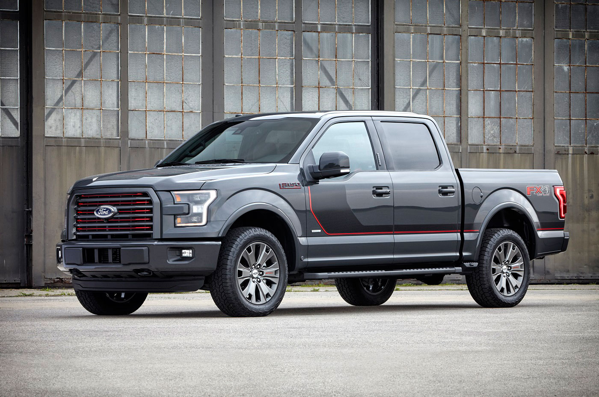
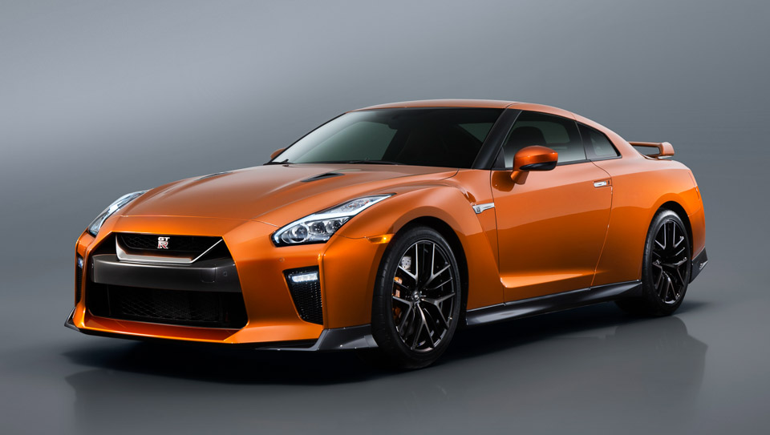
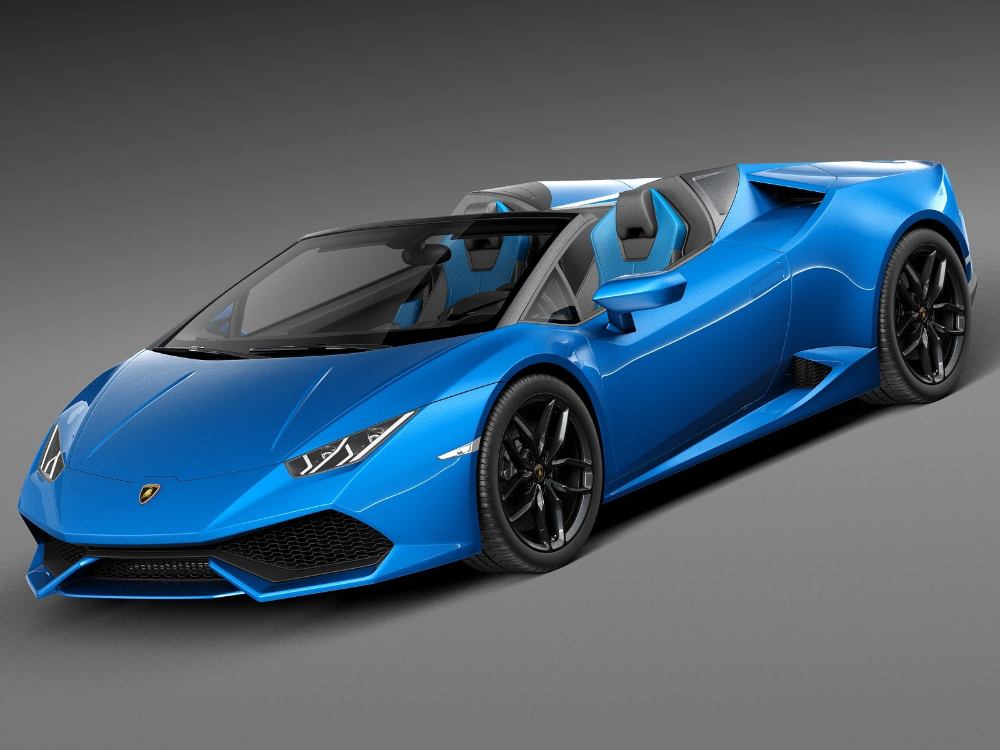
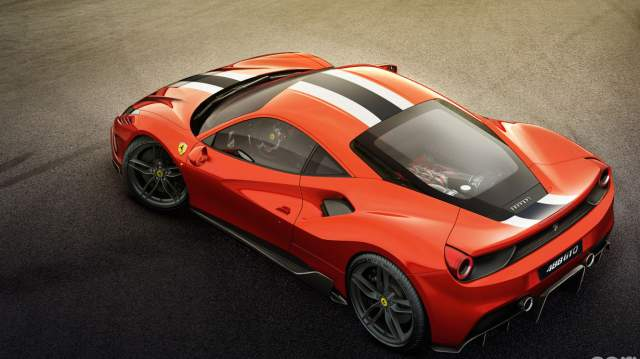
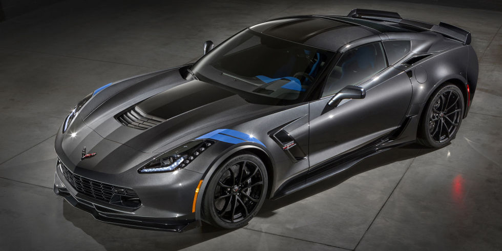

2017 Ford F-150 lariat

The 2017 F-150 Lariat has a twin-turbocharged and intercooled DOHC 20-valve V-6,
aluminum block and heads, ports and direct fuel injection.
The transmission is a 10-speed automatic with manual shifting mode.
THis vehicle is great vehicle for farm use, constrution use,
or even everday driver.
2017 Nissan GTR

The nissan gtr is a luxurious all wheel drive coupe.
The Nissan GTR has 565hp 3.8L v-6 engine. It has a
6-speed Automated Manual transmission.
The price of this vehicle is a little priceier than usual
cars at $109,990.00.
2017 Lamborghini huracan

This luxurious super car is about $210,000. The almborghini Huracan spyder
has a 5.2L v-10 that makes about 610 hp. IT has a 7-speed dual clutch
automatic transmission. With the all wheel drive system the car will
get you off the line faster. 0-62 in 3.4 seconds. 0-124 in
10.2 seconds. And a top speed of 201 mph.
2017 Ferrari 488 GTB(Gran Tourismo Berlinetta)

The ferrari 488 GTB is another pricier car at $245,000. This car has
a 3.9-litre twin-turbocharged V8. The transmission is a 7-speed F1
dual clutch transmission. The car puts out about 661 hp.
0-62 in 3.0 seconds. The top speed is 205 mph.
2017 Corvette c7 z06

The 2017 Corvetter c7 z06 is a popular american muscle/super car that everyone wants
It has a 6.2L superchargerd v8 engine. It puts out 650 hp. depending on your style
you can get either an 8-speed paddle-shift automatic or a 7-speed manual transmission.
The rpice for this supercar is probably one of the cheapest ones you cant get
at about $80,000.